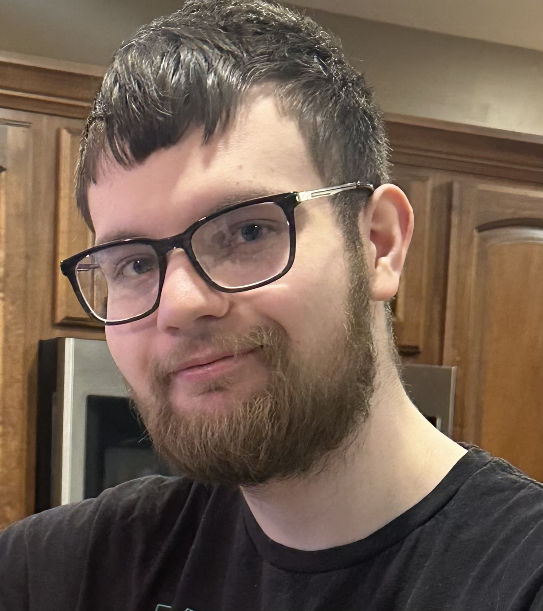

About the Author

I grew up spending countless hours exploring and playing video games, immersed in what many consider one of the highlights of gaming history. These formative experiences shaped my curiosity and solidified gaming as my greatest hobby, a passion that has remained central throughout my life.
In recent years, I’ve come to recognize that my preferences for trying new games are fairly narrow. I don’t always branch out into every genre or title, yet the games I do commit to bring me lasting enjoyment. Regardless of how limited the variety in my library may be, the depth of engagement I find in each experience makes them meaningful.
Much of my early years were spent playing Minecraft, most notably Pocket Edition on the iPad and iPhone. I vividly remember playing during visits to relatives or at home on my own device, and even recall experimenting with it on an old iPod Touch before it was lost in an accident. Alongside Minecraft, I enjoyed titles such as Halo: Reach, Mario Kart Wii, and LEGO Batman 2, each leaving its mark on my childhood across different consoles.
Even now, I continue to play on platforms like Steam, where my library includes Terraria with tModLoader, Destiny 2, STAR WARS: The Old Republic, Halo: The Master Chief Collection, Metal Gear Rising: Revengeance, and The Binding of Isaac. Roblox has also remained a constant presence, serving as the platform I’ve been most active on for several years. One of the Roblox games I played heavily in the past was Phantom Forces, though today I spend much of my time on Blast Zone. While I’ve never been particularly skilled at PvP combat in most games, Blast Zone is the exception—I’ve become one of the more competitive players in its community. Destiny 2, however, stands as the single game I’ve dedicated the most time to, with over 1,600 hours logged on Steam.
My academic journey deepened this interest, as I pursued coursework in computer science and design. I found joy in building small projects, including this interactive website, each one serving as a stepping stone toward understanding how technology and creativity intertwine. These projects taught me how experiences are crafted not only for developers and creators but also for the users, viewers, and players who interact with them.
Beyond academics, I’ve cultivated a passion for photoshopping and editing existing artwork. Experimenting with cutting, layering, image insertion, and color filtering has given me a creative outlet that complements my technical pursuits. Many of these projects naturally gravitated toward video game themes, allowing me to merge my artistic interests with my love for gaming.
Looking ahead, I aim to continue developing projects that satisfy my personal interests and transform ideas into reality. Whether through game design, web development, creative writing, or photographic editing, I want my work to inspire curiosity, foster connection, and serve as a reflection of both my passions and my growth. My hope is that these endeavors will not only resonate with others but also continue to challenge and enrich my future self.